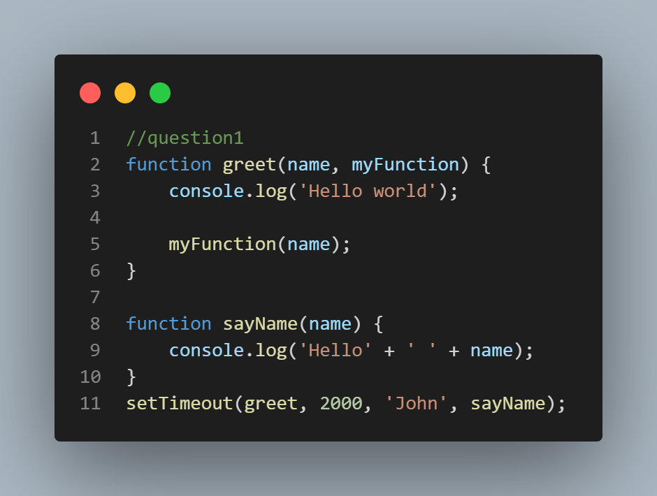
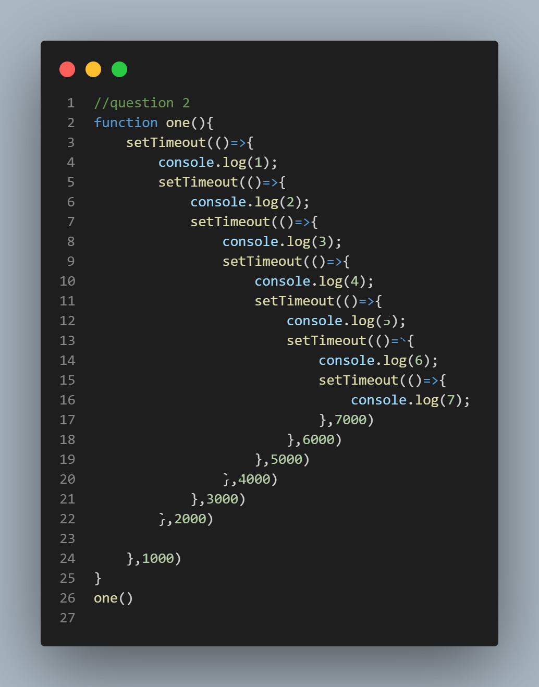
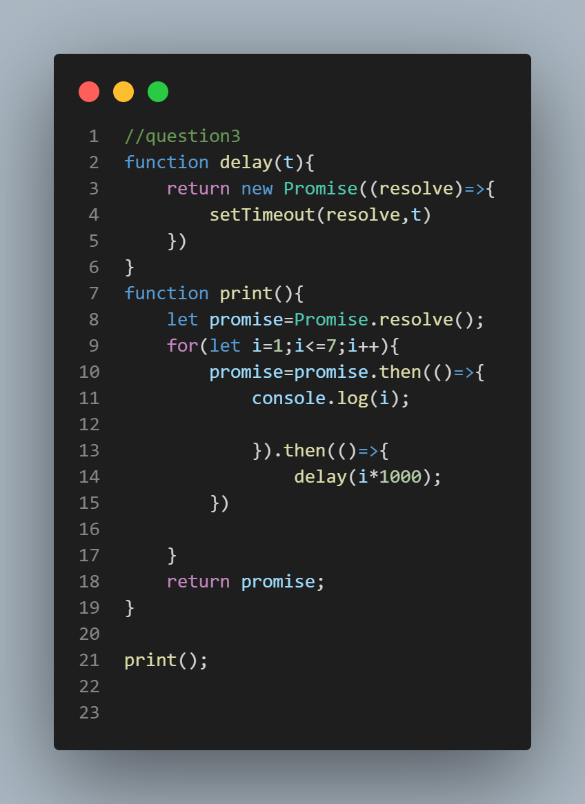
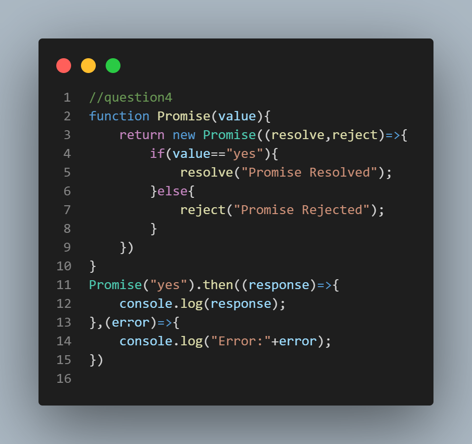
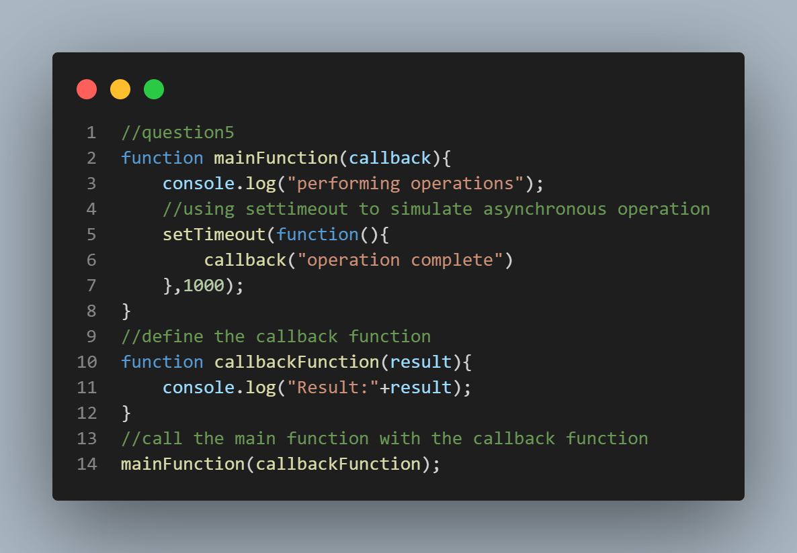
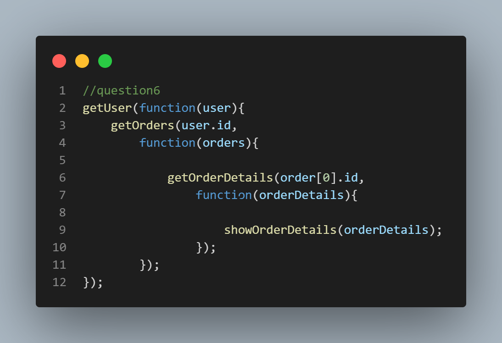
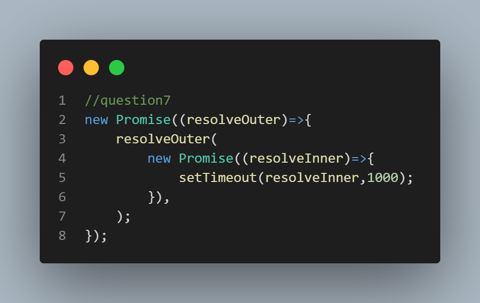
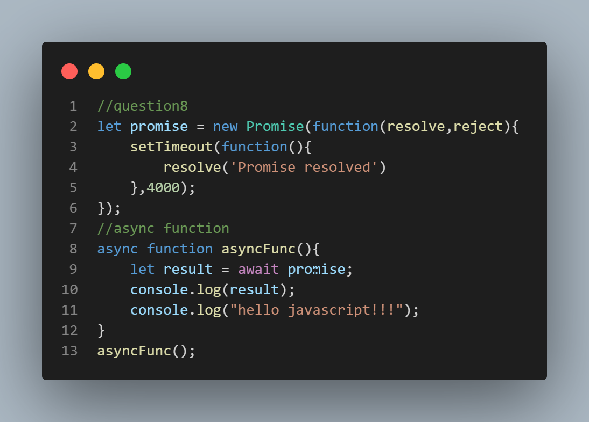
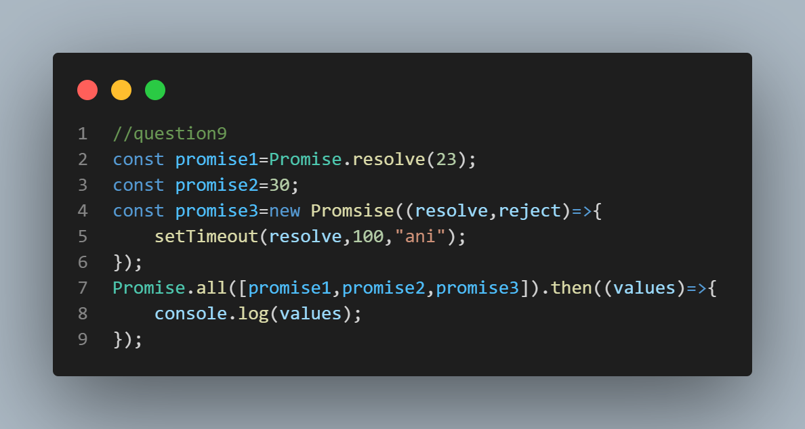

QUESTION1: Write one example explaining how you can write a callback function.

QUESTION2: "Write a callback function to print numbers from 1 to 7, in which 1 should be printed after 1 sec, 2 should be printed after 2 sec, 3 should be printed after 3 sec, and so on.
Explain callback hell.
Numbers
1
2
3
4
5
6
7"

call back hell is a function which have nested call backs like pyramid shape and
call back function is set timeout function
QUESTION 3: "Write the promise function to print numbers from 1 to 7, in which 1 should be printed after 1 sec, 2 should be printed after 2 sec, 3 should be printed after 3 sec, and so on.
Numbers
1
2
3
4
5
6
7"

QUESTION 4: "Create a promise function accepting an argument, if yes is passed to the function then it should go to resolved state and print Promise Resolved, and if nothing is passed
then it should go to reject the state and catch the error and print Promise Rejected "

QUESTION 5: Create examples to explain callback function

QUESTION 6: Create examples to explain callback hell function

QUESTION 7: Create examples to explain promises function

This promise is already resolved at thr time when its created, but resolved with the another promise and furtherly cannot be fulfilled until the time.
QUESTION 8: Create examples to explain async await function

a promise object is created and its gets resolved after 4000ms. the asyncFunc() is written using the async function. the await keyword waits for the promise to be complete either resolve or reject.
QUESTION 9: Create examples to explain promise.all function

The promise.all() method takes an iterable of promises as input and returns a single promise.The returned promise fulfille tby an array of the fulfillment values. It rejects when any of the inputs promise rejects with the first rejection reason.